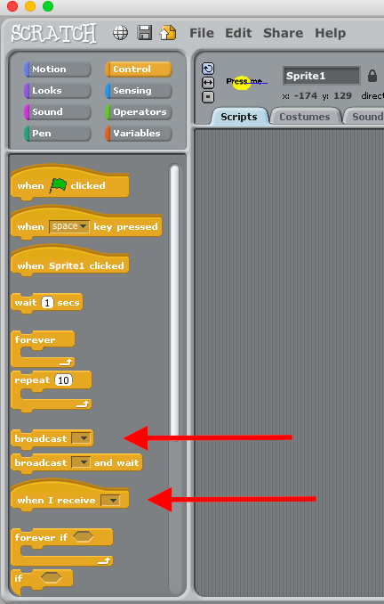
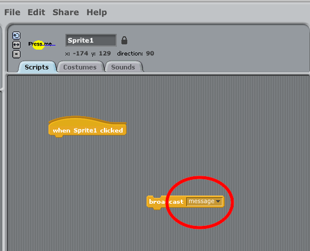
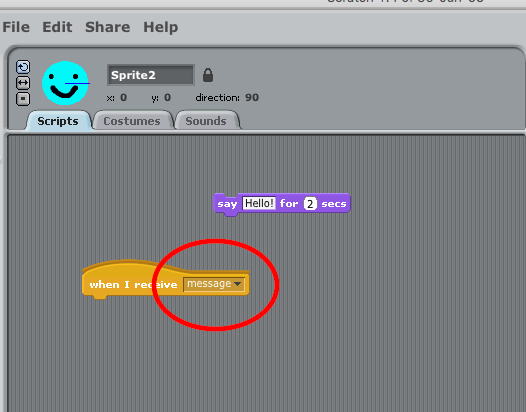

Teaching Point:
Today we will learn how to use Broadcast in Scratch.
Broadcast
Broadcast is the code that lets one sprite tell another sprite to do something. This can be used to make buttons and it can also be used to make backgrounds change when a character moves to a new place.
- Broadcast uses two or more Sprites
- The First Sprite sends the message with a Broadcast block from the Control Menu. We tell the Broadcast Block what message to say. It can be any message you want. It can even be 1 letter or number. The only thing that matters is that the other Sprites are looking for the same message. 
- The other Sprites receive the Broadcast. We use the WHEN I RECIEVE block - also from teh Control Menu. We tell it to look for the matching message. Whatever codes we put under that will happen when the message is sent by the first Sprite. 
Notice how the messages on Broadcast and on When I Receive are THE SAME MESSAGE.
Today's Assignment
Add a BROADCAST message when one character touches a door. Make the background and the objects change when the character touches the door using WHEN I RECEIVE.
Extension Activity
Share you game to our Shared Scratch Account. Post a link to your Game on Google Classroom.
Back to School Portal